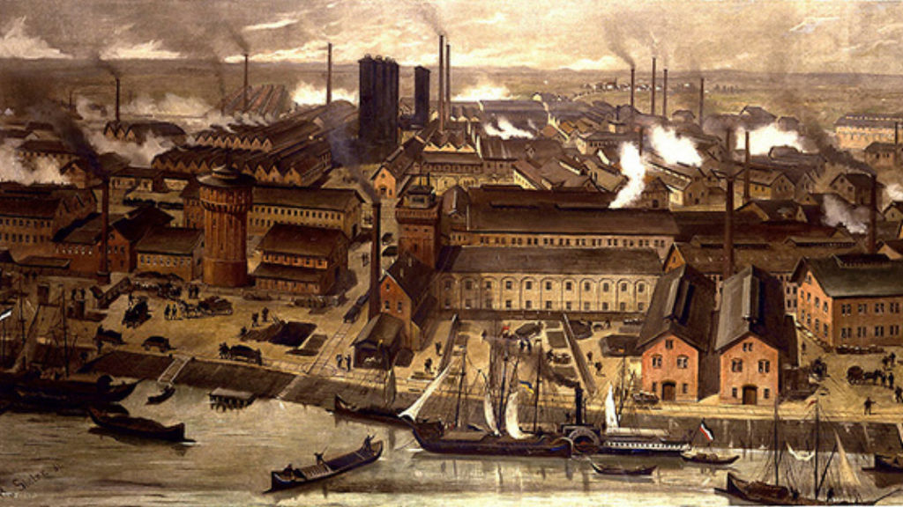
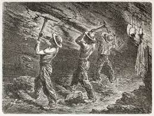
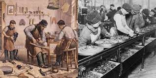
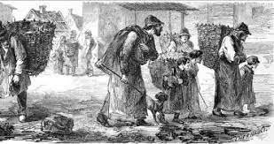
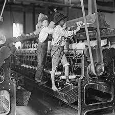
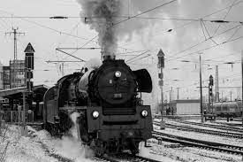

A Revolução Industrial é o intenso processo de desenvolvimento tecnológico na humanidade. Nela, houveram fortes mudanças estruturais na
economia e, consequentemente, na sociedade. Essas mudanças começaram na Inglaterra, no século XVIII, e foram se espalhando para toda a Europa.
Essas mudanças só foram possíveis graças a descoberta de Combústiveis Fósseis - principalmente do carvão -, uma fonte de energia muito vantajosa do ponto de vista econômico. Isso impulsionou a possibilidade de uma produção em massa por meio da maquinofatura , que culminaria na idealização das fábricas.

Antes de toda a ideia das fábricas e da maquinofatura, o processo de trabalho era predominantemente artesanal e manufaturado, ou seja, o trabalhador se utilizava de suas capacidades artesanais para produzir. Nesse período, era quase inexistente a divisão social do trabalho, sendo o artesão responsável por todas as etapas de produção, e, muitas vezes, também de comercialização do produto.

Saber sobre isso é essencial para entender o quão profundas são as transformações que a revolução industrial fará na sociedade.
Como já dito anteriormente, a revolução industrial surgiu causando grandes mudanças na estrutura econômica e social da sociedade. Muitas dessas mudanças, por serem não tão bem planejadas e aceleradas, acabaram
causando problemas.
Um claro exemplo disso é o processo desenfreado do exôdo rural , que provocou uma forte situação de miséria, uma vez que as pessoas não tinham emprego, e, consequentemente, dinheiro para moradia.

Um outro problema que surgiu na revolução industrial foi o péssimo ambiente de trabalho. Os trabalhadores de fábrica e de mina não tinham direitos, trabalhavam longas jornadas de trabalho, recebiam pouco, além dos frequentes abusos psicológicos e acidentes em ambiente de trabalho, devido a falta de proteção. Em resumo, não existia nada que protegesse um trabalhador durante este período. Além disso, também eram exploradas crianças.

Em reação a isso, surgiram movimentos de uniões de trabalhadores, conhecidos no Brasil como sindicato. Dois dos principais são o Cartismo e o Ludismo.
O Ludismo, surgindo mais para o início do século XIX, era um movimento mais violento. Entrava em fábricas e destruía as máquinas, alegando que estas estavam roubando seus empregos. Além disso, chegaram a ameaçar e agredir diversos donos de fábricas.
O Cartismo, surgindo ná decada de 1830, apostava em uma abordagem mais pacífica - apesar de também demonstrar violência -, atuando para garantir direitos trabalhistas e políticos para homens trabalhadores na Inglaterra.
Para mais informações sobre o Cartismo e o Ludismo, fica o vídeo abaixo.
Apesar de todos os problemas, é durante a revolução industrial que ocorrem os maiores avanços na área de tecnologia. Máquinas para as fábricas, locomotivas movidas com combustíveis fósseis, primeiros dispositivos de mensagens instantâneas, entre outros. Além disso, mais para a frente a revolução permite o desenvolvimento, inclusive, de tecnologias de ponta no meio da informática e militar, por exemplo.

A revolução industrial pode ser divida em fases durante a história, sendo elas a primeira, a segunda e a terceira. No momento, também se fala de uma quarta, porém ainda é uma discussão em aberto.
| ETAPA | CARACTERÍSTICAS |
|---|---|
| PRIMEIRA REVOLUÇÃO INDUSTRIAL |
|
| SEGUNDA REVOLUÇÃO INDUSTRIAL |
|
| TERCEIRA REVOLUÇÃO INDUSTRIAL |
|
| QUARTA REVOLUÇÃO INDUSTRIAL |
|
Caso seja preciso mais conteúdo para estudo, fica abaixo recomendações.